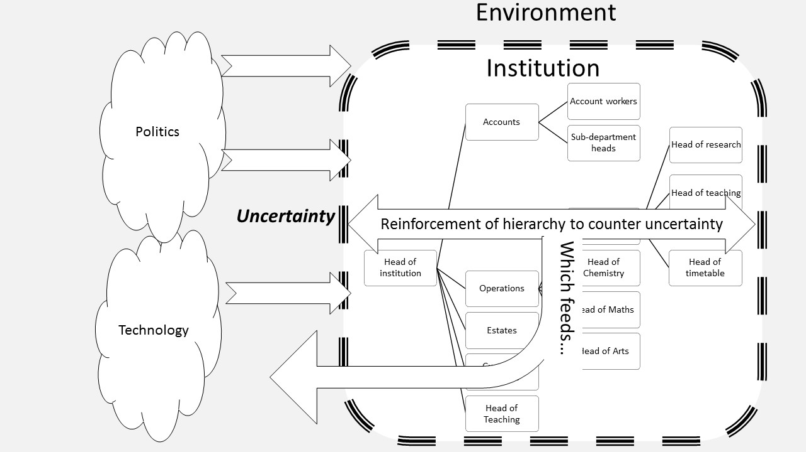

Технологии и бизнес¶
75. Бизнес¶
КЛЮЧЕВЫЕ ВОПРОСЫ:
Что технологии сделали с бизнесом?
В чем разница между тем, как компании управляли своими операциями в прошлом и тем, как они действуют сейчас?
ПОЧЕМУ ЭТО ВАЖНО?
Новые технологии сами по себе являются результатом предпринимательских фирм, что снижает транзакционные издержки для доступа к средствам снижения транзакционных издержек. Именно в этом корпоративном обеспечении услуг люди, которые стремятся снизить свои транзакционные издержки другими способами, мы находим современных интернет-гигантов.
Большинство из нас совершают транзакции во многих разных областях и взаимодействуют со многими различными типами организаций. Благодаря интернету и социальному программному обеспечению, то какими способам совершаются операции, то какие организации их производят, то как они отслеживаются и сохраняются все было трансформировано. Согласно Коузу, а затем теоретикам «нового институционализма» (Powell and DiMaggio 1991), в то время как человеческая деятельность по совершению операций является составной частью институтов, через которые осуществляются операции, модели коммуникативных транзакций в разных отраслях могут привести к динамике, при которой функции управления в рамках институтов координируется тем, что ДиМаджо и Пауэлл называют «институциональным изоморфизмом». Основные механизмы управления операциями по-разному привели к специализированным дискурсам того, что обычно называют менеджеризмом ».
76. Управление операциями с помощью социальных медиа¶
КЛЮЧЕВЫЕ ВОПРОСЫ:
Почему мы зависимы от социальных сетей?
Является ли зависимость населения от социальных сетей в коммерческих интересах компаний социальных сетей?
Как компании социальных медиа могут обеспечить чтобы мы продолжили быть зависимыми?
ПОЧЕМУ ЭТО ВАЖНО?
Когда мы используем социальные сети, у нас создается впечатление, что мы говорим с нашими друзьями или окружением. Менее очевидно, что мы разговариваем с самой социальной медиа-компанией.
Эти обмены с друзьями и медиакомпаниями являются «транзакциями». Это подразумевает некоторый обмен. В социальных сетях пользователи обменивают свои личные данные на услуги, предоставляемые компаниями социальных сетей.
 {width=”\textwidth”}
{width=”\textwidth”}Социальные медиакомпании проводят эти транзакции с целью получения прибыли. Их работа - манипулировать контекстом в рамках которого проводятся обмены или транзакции, чтобы пользовали продолжали их совершать.
На приведенной выше диаграмме показано, как обмены между пользователями происходят в контекстах, которые постоянно управляются компаниями социальных сетей на основе анализа данных, обмен которыми происходит между пользователями.
«Зависимость от социальных медиа» в какой-то мере «спроектировано», поскольку оно отвечает корпоративным интересам социальной медиакомпании.
77. Жизнеспособные системы¶
КЛЮЧЕВЫЕ ВОПРОСЫ:
В чем разница между живой системой, такой как пчелиный улей и бизнесом?
Существуют ли общие организационные принципы, которые объединяют все живые существа?
Существуют ли общие организационные опасности, которые могут привести к гибели любого живого существа?
ПОЧЕМУ ЭТО ВАЖНО?
Модель жизнеспособной системы Бира (VSM) описывает несколько уровней организации в организме и в окружающей среде. Каждый уровень - это своего рода преобразование одной формы информации в другую: то, что называется «трансдукцией»
В VSM указаны пять «регулирующих механизмов», задачей которых является сохранение жизнеспособности всего объекта. Целью системы является управление сложностью, которая измеряется тем, скольким «разнообразием» обладает системой. Бир объясняет, что регулятор должен быть способен генерировать разнообразие эквивалентное разнообразию, которое должно быть отрегулировано, или регулятор будет терпеть неудачу. (Stafford Beer, 1995).
Разнообразие организма управляется в зависимости от разнообразия его окружения. Как правило, окружающая среда более сложна (имеет более высокое разнообразие), чем организм.
Если разнообразие среды перегружает систему, система подвержена риску коллапса через неуправляемые колебания (конкурирующие за ресурсы) среди компонентов системы. Жизнеспособная система должна ослаблять разнообразие окружающей среды и усиливать ее собственные операции, чтобы обеспечить жизнеспособную работу.
Различные системы регулирования:
Система 1: компоненты, которые фактически «выполняют работу» на местах: различные значимые действия, которые должен выполнять бизнес.
Система 2: отвечает за то, чтобы различные действия системы 1 не противоречили друг другу.
Система 3: отвечает за обеспечение адекватных ресурсов различным компонентам системы 1. Она отвечает за «оперативное управление»,
Система 4: отвечает за «стратегическое управление». Роль состоит в том, чтобы проверять окружающую среду системы и искать угрозы и возможности, инструктируя систему 3 о том, что может потребоваться изменить
Система 5: отвечает за поддержание баланса между системой 3 и системой 4. При этом она поддерживает идентичность всей системы.
Вы можете представить, что VSM сопоставима с человеком:
Система 1 представляет все повседневные дела, которые вы делаете. Говоря с людьми, используя технологии, читая эту книгу и так далее.
Система 2 представляет собой правила, которые вы используете, чтобы гарантировать, что все то, что вы делаете, не противоречит друг другу. Это немного похоже на расписание или список дел.
Система 3 представляет собой планирование предстоящих задач: вы убеждаетесь, что у вас есть необходимое оборудование, достаточно времени и т. д.
Система 4 представляет ваше размышление о возможных угрозах и возможностях в будущем. Система 4 - это воображение и мечты о будущем. Она должен поговорить с Системой 3, чтобы рассказать ей, как Системе 3 может потребоваться переприоритизировать некоторые вещи.
Система 5 - ваша личность, она поддерживает баланс других систем в окружающей среде, чтобы вы представляли последовательное утверждение о том, кто вы для других.
 {width=”\columnwidth”}
{width=”\columnwidth”}
78. Крутые инструменты: продолжайте нажимать!¶
КЛЮЧЕВЫЕ ВОПРОСЫ:
Почему в Интернете все больше и больше крутых вещей?
Почему Facebook, Twitter, VK и т. д. хотят, чтобы вы продолжали кликать на классные инструменты?
Движимы ли поддельные новости политикой, или обусловлены коммерческими требованиями компаний-платформ для поддержания пользовательских операций?
ПОЧЕМУ ЭТО ВАЖНО?
«Крутые» инструменты увеличивают количество транзакций способами, о которых пользователи не знают. Это особенно касается онлайн-игровых платформ, фитнес-трекеров, AI ботов и новых технологических возможностей, таких как виртуальная реальность (Virtual Reality). В этих случаях крошечные транзакции каналов данных дают информацию об аспектах поведения, о которых сами пользователи не знают: движение головы и глаз в виртуальной реальности, скорость пульса, информация о местоположении, конкретные фразы, используемые людьми, говорящими с ботом, или процессы обучения в то время как игрок решает загадку. В каждом случае данные можно собирать. Так как пользователи все чаще работают в рамках определенных ограничений онлайн-платформ, данные могут помочь соответствующим образом настроить эти ограничения, чтобы управлять поведением. Машинное обучение может записывать шаблоны взаимодействия и делать выводы о поведении, чтобы направлять пользователей на удовлетворение потребностей корпораций, предоставляющих коммуникативные услуги.
Экономика, лежащая в основе «забавы» новой «крутой» технологией, постоянно поддерживает инновации в Интернете. Каждую неделю мы видим новости о новой технологии, которая облегчает новые формы взаимодействия: это может быть новая компьютерная игра или новый сервис для перевода (например, магическая способность Google translate автоматически идентифицировать текст в изображениях и переводить его), или новая функция в SnapChat или устройства управляемые голосом, такие как эхо Amazon, или виртуальная реальность, или новое приложение для телефона. Одна из интересных особенностей технологий заключается в том, что нам сложно представить, что станет возможным в следующем году.
Каждое нововведение одинаково в том смысле, что каждая инновация стремится привлекать пользователей к взаимодействию. Без взаимодействия, без увеличения транзакций, инновация умирает вместе с ее корпоративной инфраструктурой.
Только через транзакции с услугами компании существует компания. И только путем сбора данных из этих транзакций компания может получать прибыль. Интернет-сервисная компания должна создать условия для обмена многими транзакциями и использовать информацию, которую он собирает из этих транзакций, чтобы:
(а) предоставлять таргетированные рекламные услуги;
(б) предоставлять аналитические услуги другим корпоративным клиентам;
(c) управлять пользовательским поведением путем ограничения информационной среды на платформе в направлениях, которые благоприятствуют корпоративным клиентам;
(d) направлять пользовательскую базу платформы к новым практикам и услугам, которые увеличивают их участие и расширяют сеть.
79. Иерархии¶
КЛЮЧЕВЫЕ ВОПРОСЫ:
Нужны ли нам короли, президенты, боссы и организации?
Как мог бы выглядеть мир, если бы не было иерархии?
Делает ли технология то, что делает организация?
ПОЧЕМУ ЭТО ВАЖНО?
Университеты, церкви, школы, армии, правительства, корпорации и скаутские группы организованы иерархически. Это означает, что на вершине есть босс (первосвященник, король, вице-канцлер, президент, ректор), а под ними есть отделы, каждый с руководителем, а под каждым подразделением есть сектора с руководителями, когда, наконец, есть отдельные работники, чья функция заключается в том, чтобы их руководитель не мог быть ни в чем обвинен.
Иерархии людей выполняют множество функций. Они кодифицируют разделение труда внутри организации, обеспечивают структуру управления сложностью организации и, возможно, самое главное
- они предоставляют «линии ответственности», которые распределяют поощрения и обвиняют разных членов организации, когда их подразделения либо преуспевают, либо терпят неудачу.
Из-за этого они также служат для поддержания степени соответствия стандартам и ожиданиям человека в верхней части иерархии. В университете иерархия также усиливает структурирование знаний, по мере того как они появляются в учебном плане.
Те, кто находится на вершине иерархии, могут сделать заявления о том, что станет реальным для других в организации: президент может объявить новые законы, глава университета может объявить новые правила экзаменов и т. д.
Иерархии также заявляют, что некоторые вещи в дефиците: например, банк заявляет, что деньги в дефиците, и благодаря этому они сохраняют свою ценность.
 {width=”\columnwidth”}
{width=”\columnwidth”}
80. Ослабление в иерархиях¶
КЛЮЧЕВЫЕ ВОПРОСЫ:
Сколько информации об организации может вбирать босс?
Сколько информации теряется в процессе отчетности о том, что на самом деле происходит в бизнесе?
ПОЧЕМУ ЭТО ВАЖНО?
Основополагающим принципом иерархии является ослабление. Очень сложные явления содержат множество описаний, которые нужно сжать до кратких описаний «того, что происходит», которое может впитать команда высшего руководства.
В любой институциональной иерархии это ослабление работает как «вертикально», снизу организации кверху и горизонтально, при этом каждый человек должен смягчать сложность совокупности окружающей среды в пределах которые они находятся. Поскольку каждый человек является средой каждого другого человека, любая организация имеет горизонтальное ослабление на всех уровнях между всеми людьми. На рис. 7.3 показаны модели ослабления и разделения знания в институциональной структуре.
Эта схема, однако, представлена в упрощенном виде. Люди, как и другие животные, формируют свою среду под себя. От ослабления окружающей среды до простых организационных принципов люди усиливают эти организационные принципы, внося изменения в свою среду, так что их организационные принципы обеспечивают надежный способ координации. Это действие для формирования окружения представляет собой противоположность ослабления: это усиление понимания человеком своей окружающей среды.
В современных организациях процесс ослабления снизу вверх и от окружающей среды к индивидууму определяется информацией: собираются и обрабатываются данные обо всем: о посещении занятий, опросе студентов, стоимости проезда и доходов студентов, чтобы помочь организационному принятию решений. Хотя и этот диапазон данных впечатляет и наше современное аналитическое программное обеспечение данных гипнотизирует, такая информация всегда является ограничением - она всегда является инструментом ослабления. Что остается за этим? К сожалению, то, что упущено, часто проявляется как угрожающая сила, возникающая из ниоткуда, которая вызывает внезапные потрясения для иерархий. Такова история недавних институциональных кризисов от финансового краха банков и корпораций, жестокого обращения с детьми в церкви, незаконного поведения журналистов, скандалов со здоровьем, злоупотребления властью голливудскими магнатами и расходы политиков.
81. Являются ли иерархии устойчивыми в мире неопределенности?¶
КЛЮЧЕВЫЕ ВОПРОСЫ:
Способствуют ли институциональные иерархии условиям, которые могут угрожать им?
Существуют ли альтернативные формы организации, которые не являются иерархическими?
ПОЧЕМУ ЭТО ВАЖНО?
Многие иерархические организации испытали потрясения и кризисы доверия в последние годы (например, жестокое обращение с детьми в католической церкви, скандалы в прессе, правительственные скандалы, корпоративные неудачи). В некоторых случаях эти организации выходят из-под контроля.
Эти скандалы являются «потрясениями» от внешней среды, на которой организация должно реагировать. Их эффект состоит в том, чтобы показать, что среда, в которой как считала организация, она работает с некоторой определенностью, внезапно оказывается неопределенной.
Организации реагируют на эту неопределенность с помощью бюрократических процессов: есть запросы, реструктуризации, определяются и меняются ответственные лица и так далее. Эффект и мотивация этих процессов заключается в сохранении структуры организации. Критически важным является то, что большинство организации должны реагировать на неопределенности окружающей среды, которые они сами создают! Как это произошло?
На рис. 7.4 показано динамическое соотношение между неопределенностью окружающей среды и реакцией организации на него как положительный цикл обратной связи.
Иерархии носят необычный характер: природный мир является экологическим, где различия между элементами, которые могут оказаться в иерархии (например, уровни пищевой цепи), взаимосвязаны таким образом, что означает, что доминирование на одном уровне над другим приводит к катастрофе.
Точно так же мозг не является боссом тела. Тело состоит из нескольких компонентов, которые работают вместе, координируются сигналами, проходящими через центральную нервную систему.
В природном мире вместо иерархии мы видим замкнутую систему. Это связано с тем, что природные структуры стремятся к жизнеспособности и адаптивности в ответ на меняющуюся среду. Замкнутые организационные структуры помогают достичь этого благодаря постоянной органической адаптации.
{width=”\columnwidth”}
82. Прогнозирование технологий¶
КЛЮЧЕВЫЕ ВОПРОСЫ:
Как мы можем предсказать «следующую вещь» в технологиях?
Что делают компьютеры с организациями и обществом?
ПОЧЕМУ ЭТО ВАЖНО?
Понять потенциальное социальное воздействие технологий — это понять взаимосвязь между технологиями и организациями. И технологии, и организации выступают посредниками между людьми. В обоих случаях это посредничество проводится на фоне риска.
Предсказания о влиянии технологии могут быть сделаны двумя способами. С одной стороны, мы можем попытаться установить тенденции из широкого спектра наблюдаемых явлений. Этот подход называется «синтетическим». В качестве альтернативы мы можем проанализировать более глубокие лежащие в основе механизмы, которые порождают сегодняшние явления, и извлечь из этих механизмов явления, которые могут представлены нам завтра. Этот подход называется «аналитическим».
Пример успешного аналитического подхода к прогнозированию технологии содержится в книге Винограда и Флореса «Понимание компьютеров и познания», которая была опубликована в 1986 году (Winograd и CF Flores 1986). Виноград и Флорес стремились определить основные механизмы, которые привели к технологиям своего времени, используя кибернетический анализ и философию. Их вывод был крайне критичен по отношению к преобладающему «синтетическому» пониманию технологий в пред-интернет-веке, когда компьютеры воспринимались как для обработки данных и Искусственного интеллект (AI). В то время как поверхностные появления технологий предполагали, что ИИ и данные указывают на будущее, аналитический подход Винограда и Флореса определил человеческое общение как область фундаментальной трансформации компьютерами в 1986 году и которое, по их мнению, будет по-прежнему изменяться в будущем (это было до Всемирной сети)
В течение нескольких лет стало очевидно, что они были правы. Технологии «технологического процесса», которую они разработали на основе своей философской и технологической критики, стала одним из основных компонентов корпоративной инфраструктуры ИТ-коммуникаций.
Их аргумент заключался в том, что компьютеры были построены на языки и были инструментами языка, ориентированными на «речевые акты», которые выполняются через компьютеры (опираясь на теорию речевого акта Остина и Сирла).
Компьютеры записывали речевые акты, и благодаря им обязательства, людей по отношению к друг другу - теми взаимообмены, которые имеют решающее значение для установления доверия между людьми, - можно управлять и отслеживать даже до такой степени, что в конечном итоге новые компьютерные коммуникационные технологии могут помочь предугадать и избежать сбоев - мы можем частично предвидеть ситуации, в которых могут возникнуть сбои (отметив их повторение), и мы можем предоставить людям инструменты и процедуры, необходимые для их преодоления. Кроме того, могут быть разработаны новые диалоговые сети, которые дают организации возможность распознавать и реализовывать новые возможности. (там же.)
Тот факт, что компьютер записывал все речевые акты, которые производились всеми, был для Винограда и Флореса критической проблемой. Любопытно, что, несмотря на их анти-AI-позицию, эта основная идея хранения и анализа речевых актов лежит за тем, что мы теперь считаем основными достижениями современного ИИ: социальные сети в Интернете предоставляют «большие данные», из которых методы интеллектуального анализа данных идентифицируют точно то, чем артикулировали Виноград и Флорес: способы предвидеть - и потенциально избежать сбоя.
83. Операции и институты¶
КЛЮЧЕВЫЕ ВОПРОСЫ:
Какова роль институтов в посредничестве совершения транзакций между отдельными лицами?
Что технологии делают для управления транзакциями в бизнесе?
ПОЧЕМУ ЭТО ВАЖНО?
Влияние компьютеров на большинство отраслей промышленности, начиная с розничной торговли и заканчивая финансами, постоянно увеличивалось при автоматизации транзакций наряду со все более сложными средствами организации различных услуг обработки транзакций.
Связь между транзакциями и организациями была впервые изучена в 1930-х годах в экономической работе Рональда Коуза (Coase 1990). В развитие своей теории, Коуз утверждал, что экономика была кверху дном. Она сосредоточена на средствах для получения экономических результатов, но игнорирует социальные субъекты, с помощью которых были согласованы средства и цели экономики. Коуз подчеркнул, что в экономике нет вопросов о существовании рынков, банков, фирм, правительств и т. д. Его предложение состояло в том, чтобы увидеть, что социальные субъекты, такие как рынки, были созданы посредством транзакций, которые создавали индивиды: рыночные операции что-то стоят и формируя организацию и позволяя некоторым властям («предпринимателю») направлять ресурсы, сохраняются определенные рыночные затраты. Предприниматель должен выполнить свою функцию с меньшими затратами, принимая во внимание тот факт, что он может получить факторы производства по более низкой цене, чем рыночные, которые он заменяет, потому что всегда можно вернуться на открытый рынок, если он этого не сделает. (тот же источник.)
Создание такого института, как рынок, возникло из-за того, что стоимость транзакций между продавцами и их клиентами может быть уменьшена путем предпринимательского создания организации для обмена между физическими лицами. Коуз продолжает обсуждать роль технологии в фасилитации транзакций:
Изобретения, которые имеют тенденцию приближать факторы производства ближе друг к другу, путем уменьшения пространственного распределения, как правило, увеличивают размер фирмы. Такие изменения, как телефон и телеграф, которые, как правило, снижают затраты на организацию работы на расстоянии, будут иметь тенденцию к увеличению размера фирмы.
84. Корпоративная ценность социальных медиа¶
КЛЮЧЕВЫЕ ВОПРОСЫ:
Почему цена акций Facebook падает, если компания теряет пользователей?
Что делать Facebook, чтобы сохранить и увеличить число пользователей?
ПОЧЕМУ ЭТО ВАЖНО?
Снижение количества транзакций, которые проводил Twitter, оказало значительное влияние на цену акций Twitter («акции Twitter падают из-за неуверенного роста пользователей» 2016). В равной степени цена, требуемая Snapchat, зависит от количества транзакций, которые она производит. Это важный показатель «крутости» технологий («Snapchat IPO» 2017).
Каждая корпорация социальных медиа-стремится увеличить транзакции, которые есть у их клиентов. Обычным обоснованием для поддержания этого является то, что, в то время как клиенты проводят транзакции в корпорации, они чаще видят рекламу.
Благодаря полезным различиям между платными ссылками и бесплатными ссылками компании могут создавать условия, при которых некоторые транзакции (и, в конечном счете, те транзакции, которые приводят к получению доходов) становятся более вероятными.
Задача для компаний в социальных сетях - всегда увеличивать количество транзакций, которые люди проводят. Они могут делать это разными способами, отчасти путем манипулирования элементами, которые, как представляется, пользователям соответствуют их предпочтениям, а отчасти благодаря внедрению новых инструментов и услуг, которые побуждают людей нажимать больше.
{width=”\columnwidth”}
85. Доверие и алгоритм¶
КЛЮЧЕВЫЕ ВОПРОСЫ:
Почему вы доверяете Google, Facebook, VK, Amazon?
Каковы последствия потери доверия к безопасности покупок в Интернете?
Должно ли быть доверие в организации? Может ли это быть в виде алгоритма?
ПОЧЕМУ ЭТО ВАЖНО?
Доверие клиентов имеет решающее значение для всех предприятий. Если клиенты теряют доверие к компании, она уходит из бизнеса.
Сеть использовалась в качестве инструмента для координации контрактов между покупателями и продавцами после бума dot-com начала 2000-х годов. Это связано с установлением доверия к онлайн-платежам.

Доверие в Интернете управляется алгоритмами, которые кодируют данные кредитной карты и другую информацию в формах, которые означает, что эти данные остаются закрытыми. Представьте, что криптографические ключи, которые поддерживают доверие к онлайн-платежам, взломаны, и никакие онлайн-платежи не могут быть больше безопасными. Каковы были бы последствия?
Хотя мы полагаем, что мы доверяем таким компаниям, как Paypal или Mastercard, мы действительно доверяем этим криптографическим алгоритмам.
Алгоритмы доверия не должны быть централизованы вокруг конкретной компании. Биткойн - это криптографический алгоритм без какой-либо организации или бизнеса, поддерживающего свою ценность.
Тот же принцип, который поддерживает доверие к Биткойну, может использоваться для поддержания доверия к другим услугам, таким как продажа товаров, гостиницы, такси, путешествия и т. д.
В будущем мы сможем видеть, что сами люди доверяют алгоритмическим процессам, а не учреждениям, которые используют эти процессы. Иногда сама работа алгоритмов более ясна и прозрачна, чем работа предприятий.
В будущем мы сможем увидеть, что это ведет к тому, что люди называют
«Децентрализованная сеть», где договорные обмены между людьми координируются с помощью алгоритмов, а не через посредников.